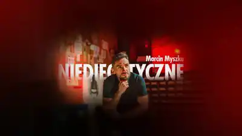
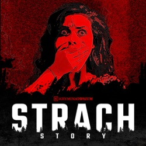
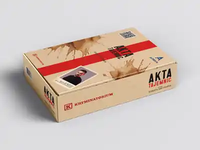
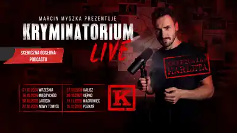

YouTube / true crime
Niediegetyczne
Kanał poświęcony true crime. Kulisy głośnych spraw kryminalnych, sylwetki seryjnych morderców oraz ciekawostki ze świata kryminologii i kryminalistyki.
Zobacz wybrane materiały ↓Podcasty, wideo, książka, audioseriale, gra detektywistyczna i wydarzenia na żywo — projekty Marcina Myszki w jednym miejscu.

Jeden z najpopularniejszych podcastów true crime w Polsce. Co tydzień przedstawia historie najbardziej zagadkowych zbrodni z Polski i świata.

Kanał poświęcony true crime. Kulisy głośnych spraw kryminalnych, sylwetki seryjnych morderców oraz ciekawostki ze świata kryminologii i kryminalistyki.
Zobacz wybrane materiały ↓
Podcast z mrocznymi historiami z życia słuchaczy — od niewyjaśnionych zdarzeń po spotkania, które na długo zmieniły ich życie.
Dowiedz się więcej ↗Ogólnopolski konwent dla miłośników true crime, reportażu i podcastów kryminalnych. Wydarzenie gromadzi tysiące uczestników oraz czołowych autorów, podcasterów i ekspertów.
Dowiedz się więcej ↗Bestsellerowa książka opowiadająca o jednej z najbardziej wstrząsających polskich spraw kryminalnych oraz kulisach jej odkrywania.
Dowiedz się więcej ↗
Detektywistyczna gra kryminalna, w której gracz analizuje akta sprawy, poszlaki i dowody, aby samodzielnie wskazać sprawcę.
Dowiedz się więcej ↗Dokumentalne produkcje o najgłośniejszych polskich sprawach i mordercach, m.in. „Rozpruwacz z Bydgoszczy”, „Sprawa Edmunda Kolanowskiego” i historia Mariusza Trynkiewicza.
Dowiedz się więcej ↗
Sceniczna odsłona podcastu Kryminatorium, łącząca opowieści o prawdziwych zbrodniach z multimediami i atmosferą wydarzenia na żywo.
Trzy materiały wskazane przez Marcina do osadzenia na stronie.